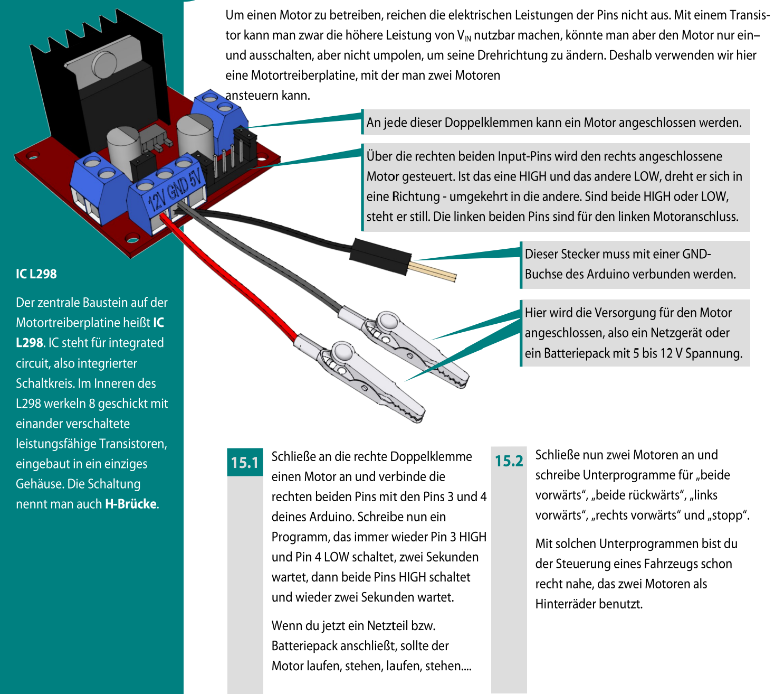
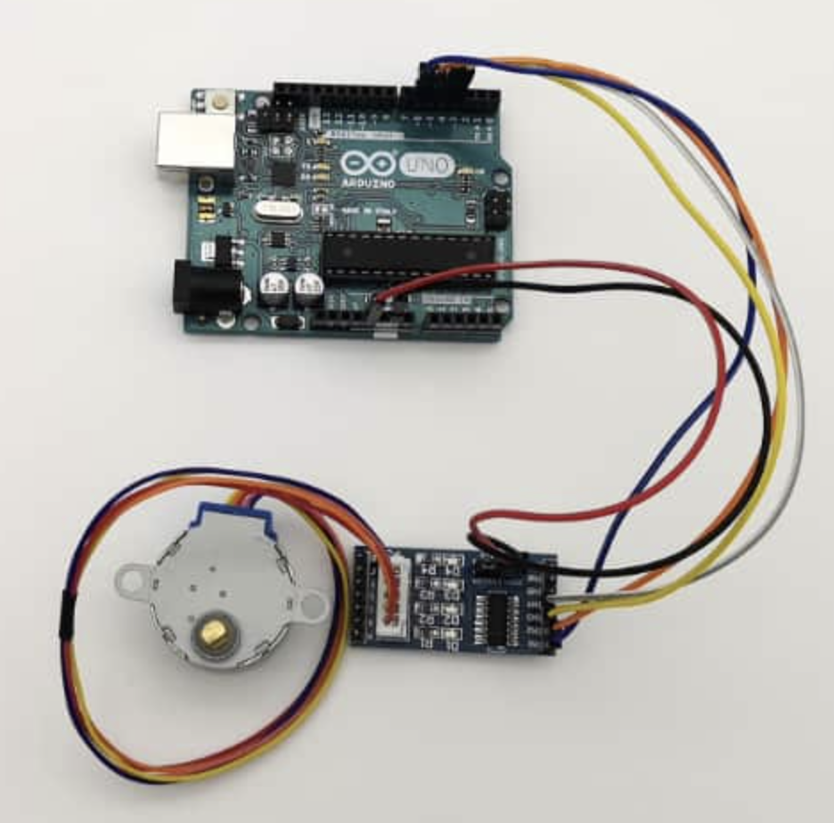
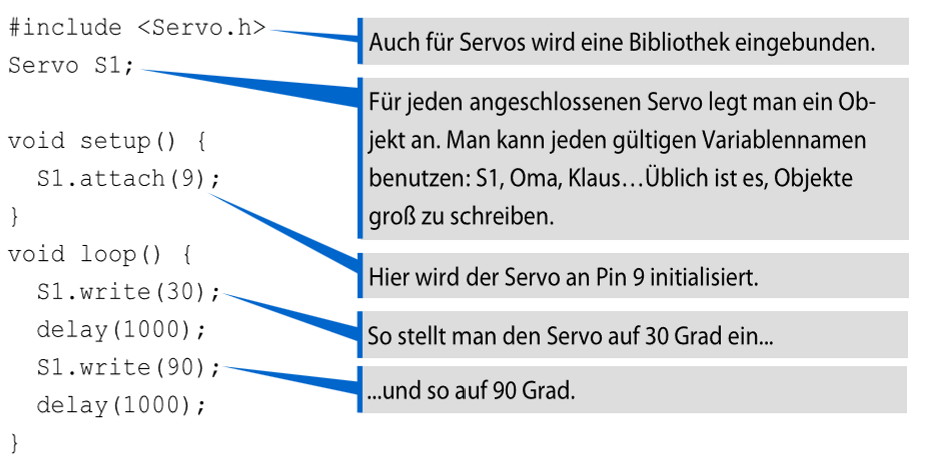

Jetzt wird aus einer Programmentscheidung eine reale Bewegung. Du vergleichst Motortypen, verfolgst Steuersignale und begründest für jede Anwendung, welche Elektronik und welcher Programmablauf passen.
Du arbeitest mit einem Arduino Uno R3 und jeweils nur einem Motoraufbau: DC-Motor mit L298N-Modul, 5-V-Schrittmotor mit passendem ULN2003-Treiber oder Positionsservo. Lege USB-Datenkabel, Steckleitungen und die von der Lehrkraft geprüfte Motorversorgung bereit. Typ, Nennspannung und Strombedarf müssen zum Treiber passen; unbekannte Motoren werden nicht auf Verdacht eingeschaltet.
Motor_15_1. Wähle das tatsächliche Board und seinen Port.digitalWrite(MOTOR, HIGH); // Motor an
digitalWrite(MOTOR, LOW); // Motor ausanalogWrite(MOTOR, 120);INPUT_PULLUP. Hier bedeutet „eingeschaltet“: solange der Taster gedrückt bleibt,
nicht bei jedem Tastendruck umschalten. Bei Loslassen wird ENA auf 0 gesetzt und der Motor läuft aus.
Nutze if, analogWrite() und eine begrenzte Geschwindigkeitsvariable (0 bis 200).
if abfragen.Wenn du einen DC-Motor sauber und belastbar steuern willst, reicht ein einzelner Ausgang nicht mehr. Dafür nutzt du ein DC-Motorsteuerungsmodul auf Basis des L298N-Chips.
Das Gleichstrommotor-Treibermodul in diesem Projekt basiert auf dem IC L298N. Im Inneren arbeitet eine H-Brücke, mit der sich ein Motor nicht nur ein- und ausschalten, sondern auch umpolen lässt. So kann er vorwärts und rückwärts laufen.
Damit der Treiber nicht überhitzt, ist ein großer Kühlkörper auf den Chip geschraubt. Er vergrößert die Oberfläche und gibt Wärme besser an die Umgebung ab.
Die Platine kann maximal zwei Motoren gleichzeitig betreiben.
Die Stromversorgung kommt über einen 3-poligen Schraubverbinder mit den Anschlüssen VS, GND und VSS.
VS versorgt den Motorzweig. Die Spannung legt die Lehrkraft passend zu Motor und konkretem Modul fest, nicht pauschal auf 12 V. VSS ist die Logikversorgung, hier nominal 5 V. Eine Chip-Grenzangabe ist keine Erlaubnis, beliebige Spannungen an die Modulplatine anzulegen.
Einige Module erzeugen 5 V mit einem eigenen Regler. Dann kann die 5-V-Klemme ein Ausgang sein. Bei anderen Jumperstellungen ist sie ein Eingang. Lass diese Einstellung anhand der konkreten Modulanleitung prüfen, bevor du 5 V anschließt. Verbinde keine zwei 5-V-Ausgänge miteinander.

Prüffrage: Warum reicht eine Verbindung der Input-Pins allein nicht aus?
Verwende ein vollständiges L298N-Modul mit passender Schutzdiodenbeschaltung, nicht den nackten Chip. Die folgende Belegung gilt für den Motorzweig A:
| Verbindung | Wohin? |
|---|---|
| Arduino D3 / D4 | IN1 / IN2 am Modul |
| Arduino D5 | ENA; nur den ENA-Jumper für diesen Signaleingang entfernen |
| Motor | OUT1 und OUT2, nicht direkt an Arduino-Pins |
| Motorversorgung + / − | VS / GND am Modul, Spannung und Stromfreigabe durch Lehrkraft |
| Arduino GND | Modul-GND und Minus der Motorversorgung |
| Logikversorgung | 5 V über den nach Modulanleitung geprüften Versorgungsweg |
ENA-Jumper und 5-V-Regler-Jumper sind nicht dasselbe. Entferne keinen Jumper auf Verdacht. Der Motorstrom darf nicht aus einem Digitalpin oder aus dem 5-V-Anschluss des Arduino kommen.
Öffne Motor_15_1 in der IDE und übernimm diese Vorlage.
Sie treibt zwei Sekunden in Richtung 1 und bremst dann zwei Sekunden.
Teste nur einen kleinen, frei laufenden Motor, dessen Anlauf- und Bremsstrom zum Treiber passen.
const int IN1 = 3;
const int IN2 = 4;
const int ENA = 5;
void setup() {
pinMode(IN1, OUTPUT);
pinMode(IN2, OUTPUT);
pinMode(ENA, OUTPUT);
digitalWrite(ENA, LOW);
}
void loop() {
digitalWrite(IN1, HIGH);
digitalWrite(IN2, LOW);
digitalWrite(ENA, HIGH);
delay(2000);
digitalWrite(IN2, HIGH);
delay(2000);
digitalWrite(ENA, LOW);
}Ergänze einen zweiten passenden Motor an OUT3/OUT4. Nutze D7 für IN3, D8 für IN4 und D6 für ENB ohne ENB-Signaljumper. Versorgung und Treiber müssen den gemeinsamen Anlaufstrom beider Motoren vertragen.
Schreibe Funktionen beideVorwaerts(), beideRueckwaerts(),
linksVorwaerts(), rechtsVorwaerts() und stopp().
Bei „links vorwärts“ läuft hier nur der linke Motor, der rechte ist freigegeben zum Auslaufen;
bei „rechts vorwärts“ umgekehrt. Lege fest, welcher Motor links ist und welche Pegel ihn am Modell vorwärts drehen.
stopp() setzt ENA und ENB auf LOW. Rufe vor jedem Richtungswechsel stopp() auf
und warte, bis die Räder stillstehen. Prüfe das Modell zunächst aufgebockt, ohne Bodenkontakt.
Notiere Pinbelegung, Testfolge und tatsächliche Drehrichtungen.
Jetzt arbeitest du den Schrittmotor Schritt für Schritt durch. Du verbindest zuerst die Bauteile, richtest danach die IDE ein und verstehst am Ende den ersten Sketch.
Wie schaffst du es, dass sich ein Schrittmotor nicht einfach nur dreht, sondern kontrolliert und reproduzierbar reagiert?

Dieses Beispiel gilt für einen 5-V-Getriebeschrittmotor 28BYJ-48 mit passender ULN2003-Platine. Andere Motortypen oder Spannungsvarianten benötigen einen anderen Aufbau. Trenne zuerst beide Versorgungen.
Stecke den Motorstecker in die passende Treiberbuchse. Verbinde IN1 → D3, IN2 → D4, IN3 → D5, IN4 → D6. Die Platine erhält VCC/+ von einer geprüften, separaten geregelten 5-V-Motorversorgung. Verbinde deren Minus mit Treiber-GND und Arduino-GND. Verbinde den externen Pluspol nicht zusätzlich mit Arduino-5V.
Verbinde den Arduino mit dem Rechner und starte die Arduino-IDE. Unter Werkzeuge > Port wählst du den richtigen Anschluss aus.
Wähle bei einem Uno R3 Arduino Uno. Der Port muss zu genau diesem Board gehören. Bleibt die Boardinformation bei einem kompatiblen Nachbau leer, beweist das allein noch keinen Defekt. Prüfe zuerst Datenkabel, Board und Port.
Ein leerer Sketch enthält immer setup() und loop(). In setup() stehen Dinge, die nur einmal beim Start passieren. In loop() läuft dein Programm immer wieder.
Für den Motor nutzt du die Bibliothek Stepper.h. Sie hilft dir dabei, einzelne Schritte gezielt anzusteuern.
Ein Schrittmotor braucht nicht nur Strom, sondern eine saubere Reihenfolge von Steuersignalen. Genau deshalb sind die Treiberplatine, die Pin-Reihenfolge und die richtige Auswahl von Board und Port so wichtig.
Jetzt zerlegst du den ersten Sketch in seine Bausteine. Ziel ist nicht nur, dass der Code läuft, sondern dass du erklären kannst, warum er funktioniert.
Lege Stepper_Test in der Arduino-IDE an. Prüfe unter Bibliotheken verwalten,
ob Stepper von Arduino installiert ist. Übernimm den vollständigen Sketch darunter und
übertrage ihn zunächst bei ausgeschalteter Motorversorgung. Die ungewöhnliche Pinreihenfolge
3, 5, 4, 6 im Konstruktor bedeutet IN1, IN3, IN2, IN4 und passt zur obigen Anschlussliste.
Vertausche diese Reihenfolge nicht mit der numerischen Reihenfolge der Anschlüsse.
#include <Stepper.h>
int steps = 2048;
Stepper Schrittmotor(steps, 3, 5, 4, 6);
void setup() {
Schrittmotor.setSpeed(5);
}
void loop() {
Schrittmotor.step(2048);
delay(1000);
Schrittmotor.step(-2048);
delay(1000);
}Mit #include <Stepper.h> bindest du die Bibliothek ein.
steps = 2048 ist hier ein Näherungswert für diesen Motortyp im verwendeten Schrittbetrieb.
Getriebeübersetzung und Schrittverfahren können abweichen; 2048 ist keine allgemeine Eigenschaft aller Schrittmotoren.
Die Zeile Stepper Schrittmotor(steps, 3, 5, 4, 6); baut ein Motor-Objekt. Es merkt sich die Schrittzahl und die verwendeten Pins.
In setup() wird mit setSpeed(5) die Drehgeschwindigkeit eingestellt. Dieser Wert gibt Umdrehungen pro Minute an.
In loop() dreht der Motor näherungsweise einmal vorwärts, wartet eine Sekunde und
dreht zurück. Bei 5 Umdrehungen pro Minute dauert eine volle Umdrehung ungefähr 12 Sekunden,
nicht eine Sekunde. step() wartet bis zum Ende seiner Schrittfolge; erst dann beginnt delay().
Markiere die Startstellung mit einem Papierstreifen und beobachte einen vollständigen Zyklus. Prüfe, ob der Motor ungefähr zur Startstellung zurückkehrt. Brummt er nur, trenne die Motorversorgung und kontrolliere Pinreihenfolge und Steckverbindungen. Erhöhe nicht einfach die Spannung. Die Bibliothek kann Spulen auch im Stillstand bestromen: Beende den kurzen Versuch durch Abschalten der Motorversorgung. Halte Drehrichtung, Dauer und Rückkehr zur Markierung fest.
Servos sind besonders praktisch, wenn du eine bestimmte Position ansteuern willst, zum Beispiel 30°, 90° oder 180°.
Ein Servo hat eine kleine eingebaute Elektronik. Sie vergleicht den gewünschten Winkel mit der aktuellen Stellung und korrigiert die Bewegung automatisch nach.
Typisch sind drei Leitungen: 5V, GND und Signal. Das Signal wird als Pulsfolge übertragen. Die Servo-Bibliothek nimmt dir dabei viel Arbeit ab.

Verwende einen Positionsservo, keinen Dauerrotationsservo. Entferne zunächst Hebel und Last oder halte den ganzen Bewegungsbereich frei. Beim Einschalten kann sich der Servo sofort bewegen.
Servo_Test in der IDE und installiere bei Bedarf Servo von Arduino
über die Bibliotheksverwaltung. Übernimm den Sketch, prüfe und lade ihn hoch.Servo S1; erzeugt das Servo-Objekt. attach(9) ordnet ihm den Signalpin zu;
es verbindet nicht die Stromversorgung. write(30) gibt eine Zielstellung vor,
bestätigt aber nicht, dass sie schon erreicht wurde. Verändere danach nur 30 zu 60 und vergleiche.
#include <Servo.h>
Servo S1;
void setup() {
S1.attach(9);
}
void loop() {
S1.write(30);
delay(1000);
S1.write(90);
delay(1000);
}Servos eignen sich dann, wenn eine genaue Position wichtiger ist als viele Einzelschritte. Du steuerst hier meist einen Winkel an, nicht eine feste Anzahl von Schritten.
Ein Gleichstrommotor dreht sich kontinuierlich. Er ist ideal für Räder, Lüfter oder Förderbänder, wenn nicht jeder Winkel exakt getroffen werden muss.
Er startet schnell, ist oft günstig und lässt sich mit PWM in der Geschwindigkeit beeinflussen. Genau deshalb wird er in vielen einfachen Robotern oder Ventilatoren verwendet.
Für die Richtung brauchst du meist einen Motortreiber oder eine H-Brücke. Für nur eine Drehrichtung reicht oft schon ein Transistor plus Freilaufdiode.
Ein DC-Motor weiß nicht von selbst, an welcher Position er gerade steht. Wenn du exakte Winkel brauchst, ist er ohne zusätzliche Sensorik die falsche Wahl.
| Motortyp | Stärke | Grenze | Typischer Einsatz |
|---|---|---|---|
| DC-Motor | Einfache Dauerrotation, gut für Geschwindigkeit | Keine genaue Positionsrückmeldung | Lüfter, Räder, Förderband |
| Servomotor | Gezielte Winkel | Begrenzter Drehbereich bei Standard-Servos | Greifer, Klappen, Lenkung |
| Schrittmotor | Genau reproduzierbare Schritte | Mehr Verkabelung und meist langsamer | Positionierung, Drehteller, Dosierung |
Verwende wieder genau den geprüften L298N-Aufbau aus 15.1: D3 → IN1, D4 → IN2, D5 → ENA ohne ENA-Jumper, Motor an OUT1/OUT2 und gemeinsame Masse. Der Motor bleibt am Treiber, nicht an den Arduino-Ausgängen.
Eine Diode allein macht einen direkten Motoranschluss am Digitalpin nicht zulässig. Sie begrenzt Abschaltspitzen, aber nicht den Anlauf- oder Blockierstrom. Für beide Richtungen brauchst du die H-Brücke und ihre passende Schutzbeschaltung, nicht bloß zwei Arduino-Pins.
IN1 und IN2: Richtung · ENA an D5: Freigabe/PWM · VS und GND: Motorleistung
Speichere DC_Richtung_PWM und übernimm den vollständigen Sketch darunter.
Die Funktion motorStop() deaktiviert ENA. Der Motor läuft aus;
die Pause ist keine Garantie, dass eine schwere Last bereits stillsteht.
const int motorPin1 = 3; // IN1
const int motorPin2 = 4; // IN2
const int enablePin = 5; // ENA, PWM
void setup() {
pinMode(motorPin1, OUTPUT);
pinMode(motorPin2, OUTPUT);
pinMode(enablePin, OUTPUT);
digitalWrite(enablePin, LOW);
}
void motorStop() {
analogWrite(enablePin, 0);
delay(1000);
}
void loop() {
motorStop();
digitalWrite(motorPin1, HIGH); // Motor vor
digitalWrite(motorPin2, LOW);
analogWrite(enablePin, 180);
delay(1000);
motorStop();
digitalWrite(motorPin1, LOW); // Motor zurück
digitalWrite(motorPin2, HIGH);
analogWrite(enablePin, 180);
delay(1000);
motorStop();
digitalWrite(motorPin1, LOW); // Motor langsam zu schnell
digitalWrite(motorPin2, HIGH);
for (int i = 0; i <= 200; i++) {
analogWrite(enablePin, i);
delay(20);
}
motorStop();
}Die Motorwahl hängt von der Aufgabe ab: Dauerrotation spricht oft für DC, Winkelsteuerung für Servo und genaue Schrittfolgen für Schrittmotor.
Zum Schluss sicherst du noch einmal die Kernideen und sammelst Anknüpfungspunkte für eigene Projekte.
Was würde sich ändern, wenn du einen Motor nicht nur bewegen, sondern seine echte Position messen willst? Dann brauchst du zusätzliche Sensoren oder Rückmeldungen, zum Beispiel Encoder oder Potentiometer.
Auch die Stromversorgung wird ab größeren Motoren schnell zum eigenen Thema: Spannung, Stromstärke und gemeinsame Masse müssen dann sauber geplant werden.
pdf-bilder/.
Maßgeblich für den Aufbau sind die geprüften Anschlusslisten auf dieser Lernseite.Servo und Stepper: docs.arduino.cc/programmingTrenne zum Abschluss die Motorversorgung. Prüfe die gespeicherten Antworten und ergänze deinen Namen in der zentralen Abgabe. Mit Ergebnisse anzeigen erhältst du die Übersicht und kannst deine Ergebnisse als PDF herunterladen. Deine eigenen Sketches und Aufbau-Protokolle bleiben zusätzlich in der IDE und in OneNote.